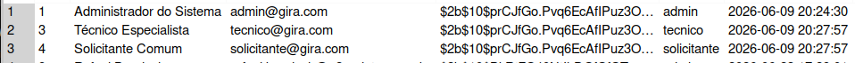
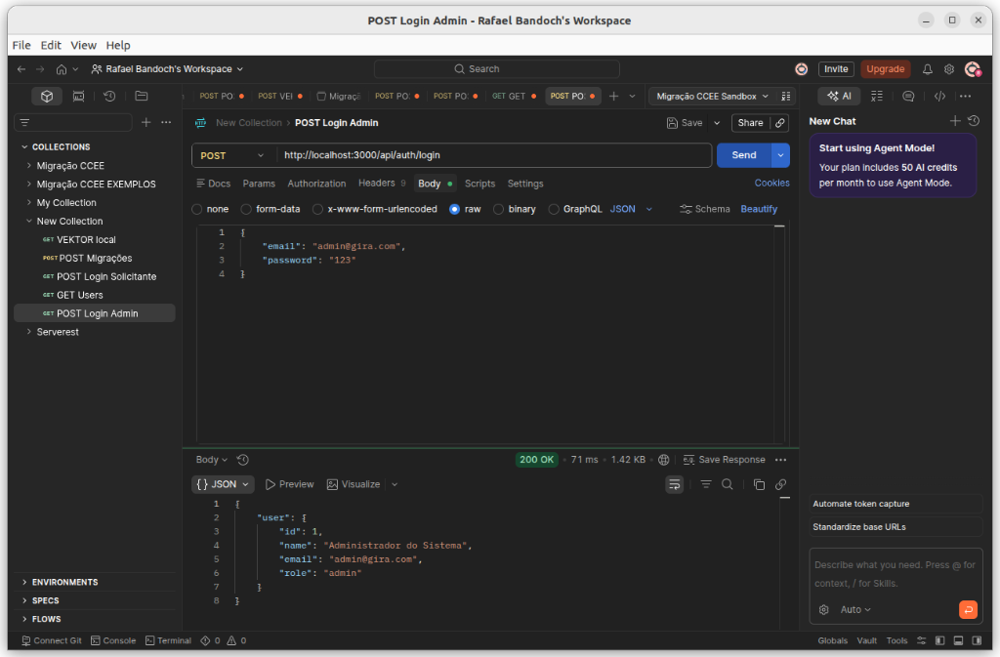
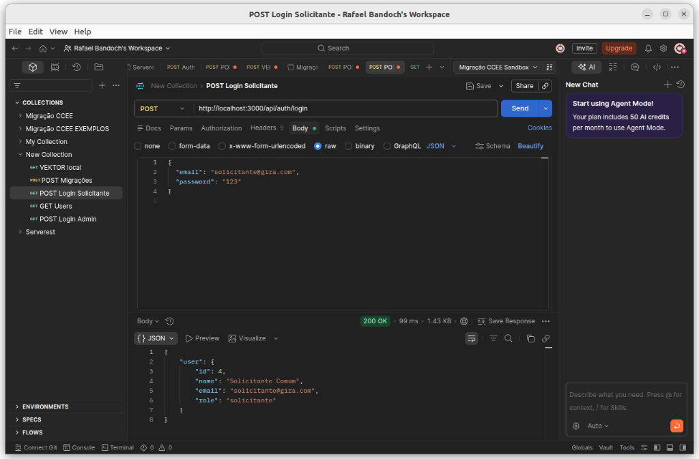
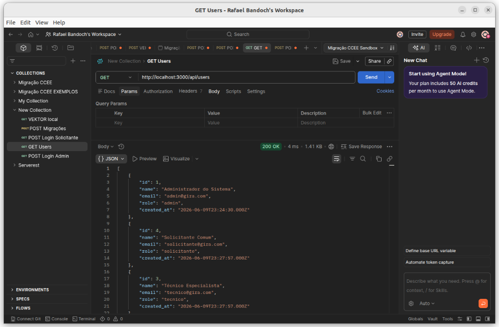
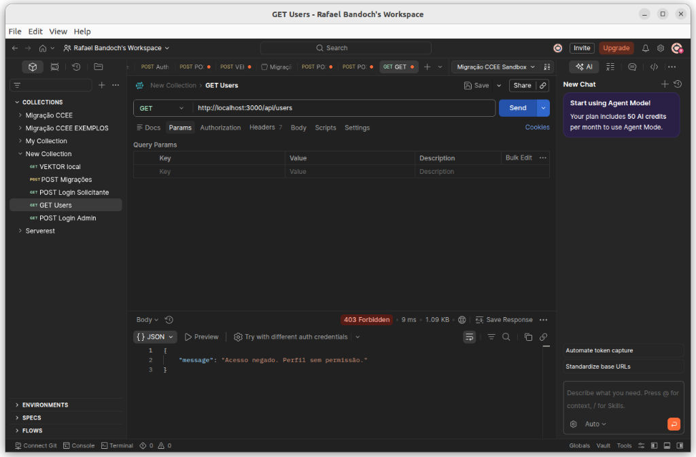
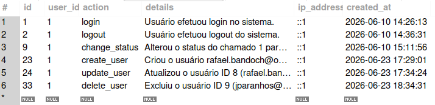

Defesa de Segurança da Informação
Gestão de Chamados com Segurança Integrada
Anttonio Osório Molinaro Maccagnini, Gabriel Lengert Guedes, João Pedro Alves de Lima, João Vitor Paranhos e Rafael Alexandre Alves Bandoch
Prof. Edson Vaz Lopes
Segurança da Informação
Visão Geral
backend/server.js, backend/config/db.js,
frontend/
database/schema.sql):
users → coluna password_hashuserstickets e ticket_history
audit_logsPilar 1
bcrypt (cost 10) e tokens JWT em cookies httpOnly.user.controller.js (bcrypt) e auth.controller.js (cookie).
Evidência: Pilar 1
A Lógica (bcrypt)
const hash = await bcrypt.hash(pwd, 10);A Prova (Banco de Dados)

Evidência: Pilar 1
Arquivo: validators/index.js
export const createUserSchema = z.object({
password: z.string()
.min(8, 'Mínimo de 8 caracteres')
.regex(/[A-Z]/, 'Pelo menos uma letra maiúscula')
.regex(/[a-z]/, 'Pelo menos uma minúscula')
.regex(/[0-9]/, 'Pelo menos um número')
.regex(/[\W_]/, 'Pelo menos um caractere especial')
});Evidência: Pilar 1
Arquivo: controllers/authController.js
// 1. Assinatura do Token
const token = jwt.sign(
{ id: user.id, role: user.role, name: user.name },
process.env.JWT_SECRET,
{ expiresIn: '1h' }
);
// 2. Envio via Cookie com blindagem
res.cookie('jwt', token, {
httpOnly: true, // 👈 Impede roubo via JavaScript
secure: process.env.NODE_ENV === 'production', // Requer HTTPS
sameSite: 'lax',
maxAge: 1 * 60 * 60 * 1000
});O Payload contém apenas dados seguros (id, role, nome). Expira rigorosamente em 1 hora.
Utilizamos atributos httpOnly (protege do JavaScript) e sameSite=lax (protege
de Cross-Site).
secure (apenas HTTPS) só é
ativado em produção. Como o ambiente local roda HTTP, o cookie secure fica desabilitado intencionalmente.
Evidência: Pilar 1
export const logout = async (req, res) => {
// 1. Registra a saída na trilha de auditoria
await logAudit(req.user.id, 'logout', 'Usuário efetuou logout.', req.ip);
// 2. Invalida o token inserindo na blacklist
const token = req.cookies.jwt;
if (token) {
await pool.query('INSERT INTO token_blacklist (token) VALUES (?)', [token]);
}
// 3. Remove o cookie do navegador
res.clearCookie('jwt');
res.json({ message: 'Logout efetuado com sucesso.' });
};export const logout = async (req, res) => {
// 1. Registra a saída na trilha de auditoria
await logAudit(req.user.id, 'logout', 'Usuário efetuou logout.', req.ip);
// 2. Invalida o token inserindo na blacklist
const token = req.cookies.jwt;
if (token) {
await pool.query('INSERT INTO token_blacklist (token) VALUES (?)', [token]);
}
// 3. Remove o cookie do navegador
res.clearCookie('jwt');
res.json({ message: 'Logout efetuado com sucesso.' });
};controllers/authController.js):
token_blacklist.middlewares/authMiddleware.js):
Pilar 2
rbacMiddleware.js e ticket.controller.js.Evidência: Pilar 2
Arquivo principal: middlewares/rbacMiddleware.js (função
requireRole())
export const requireRole = (roles) => {
return (req, res, next) => {
if (!req.user || !roles.includes(req.user.role)) {
return res.status(403).json({ message: 'Acesso negado. Perfil sem permissão.' });
}
next();
};
};routes/users.jsroutes/tickets.jsroutes/audit.jsDemonstração Prática




Evidência: Pilar 2
Arquivo: controllers/ticketController.js
let query = 'SELECT * FROM tickets t';
const params = [];
if (req.user.role === 'solicitante') {
query += ' WHERE t.requester_id = ?';
params.push(req.user.id); // 👈 Extrai o ID direto do Token (Seguro)
} else if (req.user.role === 'tecnico') {
query += ' WHERE t.assigned_to = ?';
params.push(req.user.id);
}Evidência: Pilar 2
// 1. Zod (middlewares/validateMiddleware.js) barrando sujeira
export const validate = (schema) => (req, res, next) => {
try {
schema.parse(req.body);
next();
} catch (err) {
res.status(400).json({ message: err.errors });
}
};
// 2. Parameterized Query (NUNCA concatenamos strings!)
const [rows] = await pool.query('SELECT * FROM users WHERE email = ?', [email]);middlewares/validateMiddleware.js utiliza a biblioteca Zod para validar tudo o que entra.
Em caso de payload inválido, a API corta a requisição com HTTP 400.pool.query('SELECT * FROM users WHERE email = ?', [email])). Os dados nunca são
concatenados no SQL.
Pilar 3
logAudit(); Rate Limit, Helmet e XSS-Clean.auditMiddleware.js e blindagem principal em server.js.
Evidência: Pilar 3
Arquivo: middlewares/auditMiddleware.js (função
logAudit())
export const logAudit = async (userId, action, details, ipAddress) => {
try {
await pool.query(
'INSERT INTO audit_logs (user_id, action, details, ip_address) VALUES (?, ?, ?, ?)',
[userId, action, details, ipAddress]
);
} catch (error) {
console.error('Falha ao registrar auditoria:', error);
}
};Evidência: Pilar 3

O banco de dados comprova que o sistema registra o IP (De onde?), Ação (O que?) e Usuário (Quem?) com timestamp automático (Quando?).
Evidência: Pilar 3
Arquivo: server.js
// Limpeza XSS (Cross-Site Scripting)
app.use(xss());
// Helmet (Proteção de cabeçalhos)
app.use(helmet());
// Rate Limit para Login (Mitiga Força Bruta)
const loginLimiter = rateLimit({
windowMs: 15 * 60 * 1000, // 15 minutos
max: 5, // bloqueia no 5º erro
message: 'Muitas tentativas. Bloqueado.'
});
app.use('/api/auth/login', loginLimiter);Helmet: remove headers sensíveis e protege contra sniff.xss(): limpa inputs maliciosos protegendo contra Cross-Site Scripting.CORS: restringe o consumo apenas à origem autorizada.Vulnerabilidades
O segredo usado permite falsificação de tokens. Um atacante não precisa roubar senhas do banco para se tornar administrador.
.env.example (Recomendado)
JWT_SECRET=super_secret_key_change_me.env local (Atual)
JWT_SECRET=123456audit_logs.token_blacklist.Fechamento
Bcrypt, RBAC, Helmet, Zod, HttpOnly, Rate Limit.
✔ Atendidoaudit_logs registra sucessos, mas ignora falhas de login.
token_blacklist permite revogação de acessos na hora.
Não existem rotinas ou scripts de backup de dados no sistema.
✖ Não ConformeJWT_SECRET em produção.